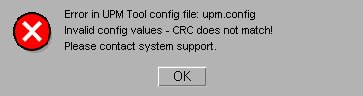

The following error message appears when starting a UPM Tool task or viewing the UPM Tool configuration file:
Illustration 10: UPM Error Message

Issue: Calculated checksum value for upm.config configuration file does not match checksum at end of file. upm.config file contents were edited or corrupted.
Solution: Copy default UPM configuration file (/usr/g/tools/upm/upm.config.3.0T.XRMW) to UPM Tool configuration file (/usr/g/tools/upm/upm.config).